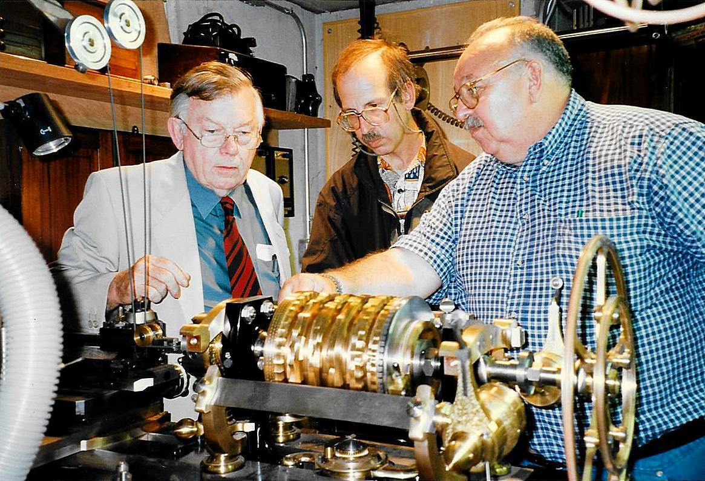
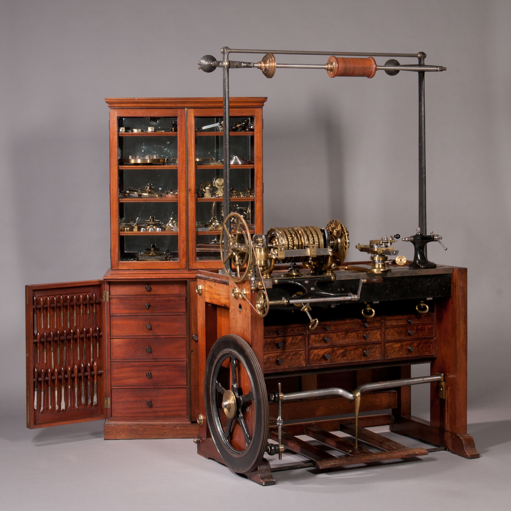

|
|

|
Buying a Rose Engine Lathe |
Buying a new rose engine lathe is an option that lets the craftsman get up and running quickly. It allows that craftsman to use the machine to make work, not requiring the craftsman to work on the machine to get it into operational order.
But there are others who like working on older machines to get them into working shape again. If that is something that excites you, please go ahead and pursue it. Ignore anyone who might criticize you for not using the machines. It is your hobby, so do what makes you happy. (A similar criticism could probably be leveled against those who choose to design and build their own machine over purchasing one, but that is an entirely different story.)
In the end, buying a new machine vs. repairing an older one (or building your own) is similar to home repairs. Some chose to have the work done whilst others do it themselves.
Only one used option is shown below: a Holtzapffel. There were other companies, including: Birch, Evans, Fenn, Goyen, Hulot, Lukin, Munro, and Plant. Just knowing the company names will help the ornamental turner know what search terms to use to seek information on the Internet. The British ornamental turning group, The Society of Ornamental Turners is a great place to start.
The video to the left shows Fred Armbruster in his shop. He's demonstrating a Birch ornamental turning lathe (starting around 0:38) and his Armbruster Rose Engine Lathe (starting around 1:22). The video is a bit long (almost 2 hours), but it shows one of the great inventors of the current day.
One older ornamental turner (I believe it was Bill Jones) expressed that he had an issue with these machines being maintained as museum pieces. Rather, he expressed that they should be used. If you do buy a rose engine lathe, please use it.
If you choose to buy a used machine, especially if you go with an older machine, you may need (or wish) to refurbish it. John Lea gave this presentation at the 2012 Ornamental Turners International Symposium discussing such activities.
The options listed below are shown in broad price groupings (like is done for restaurants). I won't try to display the costs as they will change over time, and certainly change with the options selected. In any regard, where the manufacturer has a known web site, a link is provided. The user can use those sites to get ideas of the costs.
The lathes are shown alphabetically, and no preference is given for one over another.
Index of Known Options
Fred Armbruster made two exact replicas of an (the late) Paul Fletcher's Holtzapffel Rose Engine Lathe. These were introduced to the world in 1997, and he called them the Armbruster Mark I Rose Engine Lathes.
It is Jon's favorite rose engine. It was Gorst's favorite rose engine. It is my favorite rose engine too.
Later, Fred made the Armbruster Mark II Rose Engine Lathes, using current-day standards1. Unfortunately, rumour has it that Fred stopped at 27 of these, and there won't be any more. As with the MADE Lathe, I consider this machine to be a fine piece of artwork. There are some very fine artists who use this machine.
Note 1: The standard thread definitions we know and love today (UNC, UNF, etc.), didn't come about until 1949.
Fred Armbruster worked with the masterful turner, Jean-Claude Charpignon, to develop a machine especially for fixed tool turning. Fred had already established his engineering prowess with the Armbruster Mark I and Mark II Rose Engine Lathes (along with a number of other tools) so he is the perfect person to introduce a machine like this. And Jean-Claude is equally well known in the ornamental turning world for his fixed tool work (an example of Jean-Claude's work is the piece shown on the opening page of this web site).
Like the Mark II, this machine is designed to be very functional. But unlike the Mark II, this machine is less of a fine piece of artwork itself. As can be seen in the picture to the left, it is built from the ground-up to make fixed tool work pieces.
Jean-Claude told me that he fells that the machine Fred created is better than his machine (which Jean-Claude has designated as "rose engine 4").
I understand that Fred made 11 of these, and we don't know if he will make any more.
I am looking forward to seeing the artwork that comes from this machine. One user of the new machines remarked that he loves the machine but now needs to learn how to make and sharpen such large cutters! (I recommend he travel to France and learn from Jean-Claude himself.)
The Erbschloe-Musterman Rose Engine lathe has always been like the Loch Ness monster to me. I kept hearing about it, but I can only find information about Jon Sauer using one.
Jon was kind enough to send me this information about it.
Our professional grade 14-inch swing machine delivers the highest quality work-surface finish of any rose engine manufactured and will continue to do so for decades to come. Superior engineering and the highest quality components ensure consistent, smooth, and silent performance with minimal maintenance, easy customization, rapid set-up, and dependable interchangeability of parts. It is designed and manufactured in America by the preeminent authority on rose engines.
Models are available for engine turning, ornamental turning, and special operations involving any applicable material, including architectural or hard stone, grinding ferrous and non-ferrous metals, and wire-feed weld surface build-up. Filament winding rose engines, complete with tensioners, rollers, and powered delivery heads for use with prepreg tow are also available. Handicap accessible machines and machines designed for sheltered workshop applications can be furnished to address a wide variety of circumstances.
Machines may also be outfitted with limited SPC or DRO. Virtually unlimited configurations and possibilities for accessories are available, including over 2,200 proven rosette designs.
The Holtzapffels made 2,557 lathes between 1795 and 1928, but only 15 (or maybe fewer) of them were rose engine lathes. When any of those 15 are in great shape, they are some of the most amazingly beautiful machines you can imagine.
They may be used, but you won't find them on eBay or Craig's List, and they aren't cheap: The last complete one sold was in 2012 for $228,000 (shown in the picture on the right).
Holtzapffel & Company Rose Engine Lathe No. 1636 and Cabinet of Accessories
That Holtzapffel machine, #1636, is considered by many to be the finest rose engine lathe ever built, and it was delivered to the 1st owner in 1886. It and a number of other rose engine lathes are currently owned by, and can be used at, the Plumier Foundation (which also owns and uses other historical woodworking equipment).
The Plumier Foundation has been created to teach, encourage and preserve the practices of ornamental turning and fine woodworking. Ornamental turning is an extraordinary collaboration between art and science that has created technical and aesthetic marvels over the past several centuries. Fine woodworking also has a rich history of bringing a craftsperson's hands and eyes together to join and shape mankind's greatest renewable natural resource, wood, into objects of useful art. The Plumier Foundation's goal is to keep these skills alive by offering practical, hands-on instruction in the use of vintage machines and hand tools in a manner that respects the past while moving ornamental turning and fine woodworking forward in a fresh and creative manner. To this end, Plumier Foundation serves as a unique resource providing access to knowledge and tools for practitioners of ornamental turning and fine woodworking to use.
The Plumier Foundation's goal is to be a palace, refuge, and studio for masters in ornamental turning and fine woodworking. Its intention is to create a community of those who have reached mastery, those who aspire to higher levels of accomplishment, and those who simply want to encourage the preservation of these skills. This community is developed with the idea that the mastery of a craft is a vocation, a calling, to which a person must respond. Through the development of this community, the Plumier Foundation not only passes on skills and knowledge multi-generationally but also functions as a prescriptive means of alleviating the individual craftsperson's sense of loneliness and futility often associated with the arts and crafts.
To achieve the above objectives, the Plumier Foundation provides an extraordinarily well-equipped shop in which students can learn and around which curious minds can gather. It offers a place where masters can demonstrate and pass on their skills and those on their way to mastery can learn in a hands-on manner. Through classes, self-study, guided long and short-term stays, and open house programs, the Plumier foundation brings together a wide community of participants. In this way, it preserves and enhances our historical heritage of ornamental turning and fine craftsmanship in wood and supports a creative and productive future for these activities.
(from the Plumier Foundation's web site)
If you do buy one, please do consider that one is not considered the owner of a Holtzapffel lathe: merely the current care-taker.
This video shows this machine in use with a Drill Spindle.
This video shows this machine in use again, but this time with an Ibbetson Geometric Chuck.
This video shows the turning of an African blackwood pen barrel using a 200 year-old Holtzapffel ornamental turning lathe. This lathe has been modified for rose engine applications and also has a modern cutting frame pulley apparatus.
The Lindow-White Rose Engine Lathe from Lindow Machine Works seems to be the one used by most serious enthusiasts, at least in the U.S.A. It was built as a collaboration between David Lindow and Steve White.
There are also some great videos by Eric Spatt on YouTube.
David Lindow is owner of Lindow Machine Works in Pennsylvania, and is a big influence in the community. You can see David's work on his Instagram page.
The MADE Ornamental Rose Engine Lathe is one of the finest machines you can buy, if not the finest. It was designed by and for some of the field's top ornamental turners, along with some fine machinists.
It is a very sturdy machine, designed with the ruggedness needed for fixed tool work (at which Al Collins excels).
I have come to believe that this machine has so many capabilities that you should not be allowed to buy one until you can demonstrate that you know how to use it by demonstrating a large volume of excellent work.
In addition to its capabilities, this lathe is itself fine piece of artwork. In speaking with the makers of this machine, great care has been taken to use materials and processes that hold to the history of such machines. The picture to the right does not do the machine justice for its beauty.
The acronymn "MADE" comes from the 4 principals involved in the machine's creation:
An informal walk-around of the MADE Ornamental Lathe at the 2012 Ornamental Turners International Symposium is shown in the video below.
Al Collins has made some really significant additions to this machine. One is the medallion engine he demonstrated on his Instagram feed. This is amazing.
This machine is quite expensive, but if you can afford it, you will be able to make some incredible works.
The Mandala Rose Engine is a great way to get started without having to build your own machine.
I've spoken to a number of people who own them, and they really like the machine.
It has a few really great features:
Wade Wendorf is the owner of the company, and he is a great guy to talk to. He can help you ensure you get started well.
When I was building my first one, Wade worked with me to get customized rosettes for what I wanted to do.
Armbruster Mark II Rose Engine Lathe

Armbruster Mark II Lathe
Image courtesy Mark Berry
(Click on the picture to see more pictures of this wonderful machine.)

Gorst & his Armbruster Mark I
Pictured are Michael Brooks, DH Mayeron, & Gorst. Image courtesy Jon Sauer.
Those two machines were sold to Jon Sauer and (the late) Gorst du Plessis. Celia Kudro now owns the one Gorst owned, and she posted this comment on Instagram regarding it:
Charpignon/Armbruster Fixed Tool Rose Engine Lathe

Charpignon/Armbruster Fixed Tool Rose Engine Lathe
Image courtesy Fred Armbruster

Very large fixed tool cutter in use
Image courtesy Fred Armbruster
Erbschloe-Musterman Rose Engine Lathe
Holtzapffel Rose Engine Lathe

Holtzapffel Rose Engine Lathe No. 1636
Image courtesy of Skinner, Inc.
www.skinnerinc.com
(Click on the picture to see more pictures of this wonderful machine.)
Lindow-White Rose Engine Lathe
MADE Lathe
Mandala Rose Engine Lathe